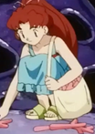

|
Ai Natsuki |
- Yes! Precure 5
- Yes! Precure 5 GoGo!
|
Ai Natsuki is a younger sibling of Rin Natsuki and twin of Yu Natsuki. Both her and her brother are so naughty that they always get in trouble. Ai is normal girl despite her older sister being a magical girl. |
|  |
Andrea |
|
Andrea is a young lady who lives on Yellow Rock Isle with her little sister Mika and their father. She helps her father by collecting Corsola horns for her father business, making jewelry. |
 |
Cattleya Glory |
|
Cattleya Glory is Haru Glory's elder sister. She does chores and acts like a mother. Cattleya raised Haru by herself and thought him several values. |
 |
Emily |
|
Emily is a little girl that Ash and Co. met when they were in Orangle Islands. She has a rivalry with a boy named Ralph. |
 |
Jacqueline de Signore |
|
Jacqueline de Signore is the wife of the current Superintendent-General of the Sauville Police. She and Grevil are childhood friends. she has a bubbly and high spirit attitude. She hides her face under facial expressions when she has a moment of sadness. |
 |
Kaname Chidori |
- Full Metal Panic!
- Full Metal Panic? Fumoffu
- Full Metal Panic! The Second Raid: Episode 00
- Full Metal Panic! The Second Raid
- Full Metal Panic! The Invisible Victory
|
Kaname Chidori is a normal high school girl. She is a loud louth who will speak her mind. She does have a softer side to her when she is with her friends and Sousuke. She dislikes and annoyed by Sousuke's militaristic and overprotective fooliness. She is a tsundure and has the whispered ability. |
 |
Maizie |
|
Maizie is Kurt's granddaughter. She has a close relationship with Kurt. She can be loud depending on the relationship. She has knowledge of Apricorn Poke Ball making. |
 |
Marian |
- Pokemon Diamond and Pearl
|
Marian is the Sinnoh Contest announcer. She related to Vivian and Lilian. She looks like them but does not have a mole. |
 |
Ranger Mason |
|
Ranger Mason is one of the rangers in charge of protecting a Pokemon preserve on Mt. Silver. Her mission to stop the poachers from hurting any Pokemon and reunited Lavitar with its mother. |
 |
Roark |
- Pokemon Diamond and Pearl
|
Roark is the Gym Leader of Oreburgh City Gym Leader. He is also the foreman of the Oreburgh Mine and chief of Ancient Pokemon Expedition Operations. Roark is a compassionate and ambitious individual. He often his challengers on their strategies as a Gym Leader and puts pressure on himself to do his best leading the Oreburgh Mines. He shares the same enthusiasm for fossile Poke like his father. He trains his Pokemon to be fast and relentless. Satsuki Yukino voiced
younger Roark. |
 |
Rose Thomas |
- Fullmetal Alchemist Brotherhood
|
Rose Thomas is from the city of Lior in a remote region of the East. She was a devout follow of prophet Cornello. She help to make her city better after incident that happened with the military. |
 |
Uxie |
- Pokemon Diamond and Pearl
|
Uxie is a legendary Pokemon from the Sinnoh region. Along with Mespirit and Azelf, Uxie is a member of the lake guardians. Uxie is the bringer of knowledge. |
| |
Valerie |
|
Valerie is the gym leader of Laverre City's gym. She specializes in fairy-type Pokemon. She is a fashion designer from the Johto region. |